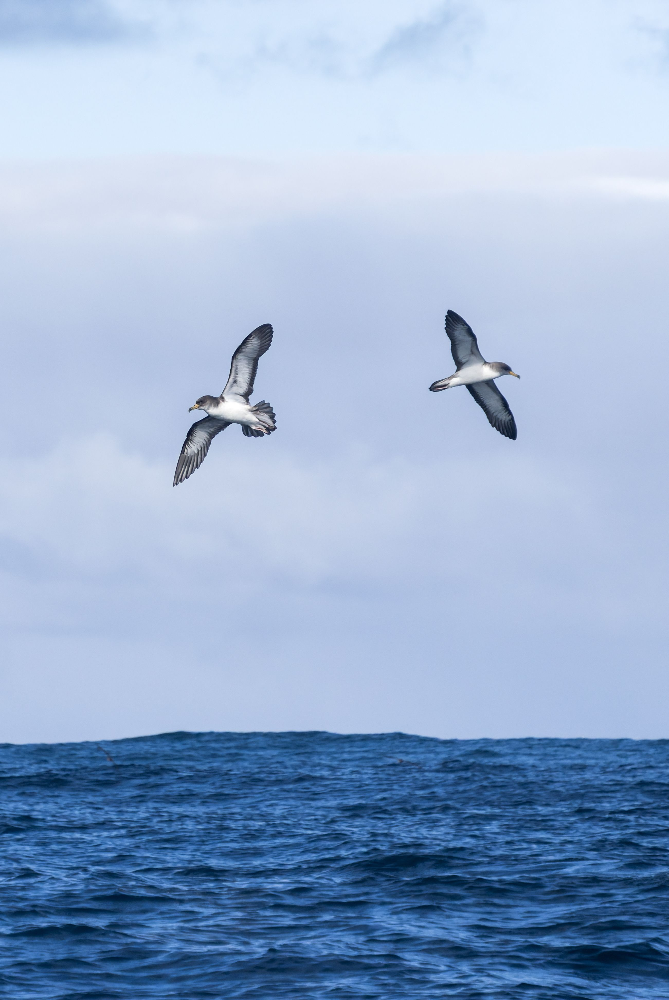
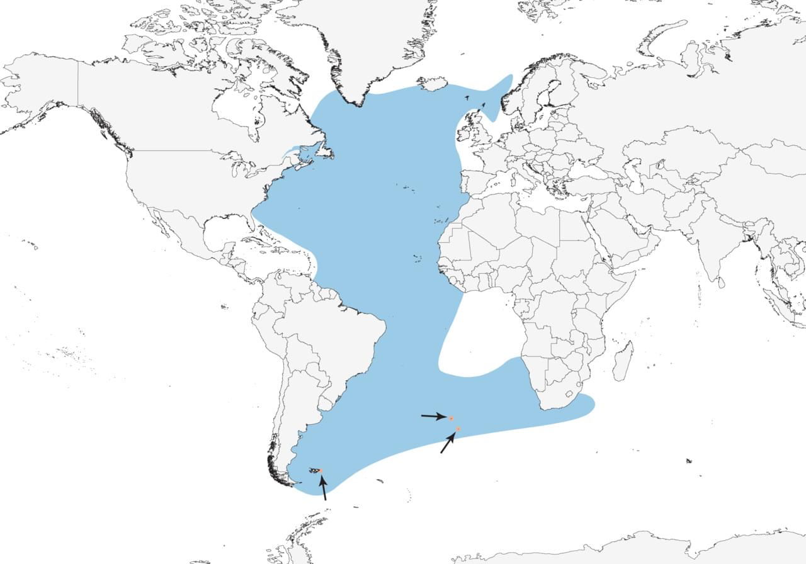

Quick Facts
- Size: 40-56 centimeters
- Weight: 650-950 grams
- Lifespan: 15-20 years
- Conservation Status: Near Threatened - Critically Endangered
- Range: Oceans worldwide, depending on species
Key Nighttime Adaptations
Shearwaters have adapted to have an incredible sense of smell, unlike most birds. This adaptation helps them locate a chemical gas released by the feasting of marine phytoplankton, indicating the presence of krill or fish. Their eyes feature a specialized reflective layer to help them see clearly while diving deep into the dark ocean waters.
Diet
These birds are marine carnivores, feeding entirely on fish, squid, and other marine prey. Their diet is rich in high-energy organisms that sustain their massive transoceanic adventures.
Role in Ecosystem
Shearwaters are the coastal ecosystem's farmers. By feeding on rich marine prey and returning to their nesting islands, they leave nutrient rich guano behind, fertilizing the soil and promoting plant growth. As shearwaters consume millions of tons of schooling marine life annually, they play a significant role in the regulation of marine populations.
Fun Fact: Shearwaters sleep while flying by turning off one half of their brain, allowing them to fly for long distances without needing to land.

Light Pollution's Effect on Shearwaters
Artificial lights cause fledglings to mistake coastal city lights for bioluminescent prey or horizons. This disorientation can lead to collisions with buildings and other hazards leaving them trapped and vulnerable to predators.